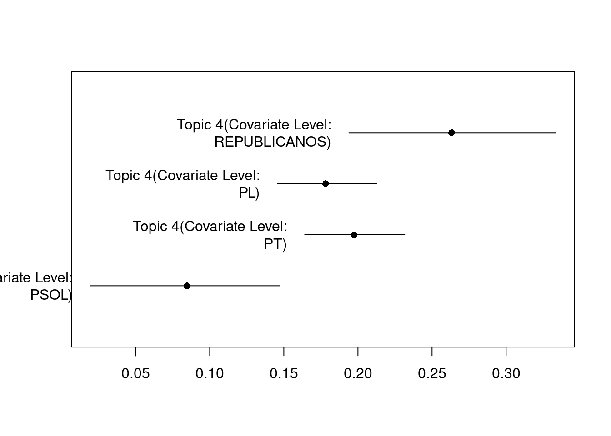

Método: utilizar modelos de tópicos para identificar tópicos discutidos no período.
STM é utilizado para estimar a influência de diferentes partidos (PT, PL, PSOL e REPUBLICANOS) sobre o tema relacionado ao Papa Francisco.
# Criar tokenstokens_discursos <- corpus_discursos |>tokens(remove_punct =TRUE, remove_numbers =TRUE, remove_symbols =TRUE) |>tokens_remove(stopwords("portuguese"))# Criar DFM, removendo palavras muito frequentes e muito raras dfm_discursos <- tokens_discursos |>dfm() |>dfm_trim(min_termfreq =0.8, termfreq_type ="quantile",max_docfreq =0.1, docfreq_type ="prop" )# Converter DFM do quanteda para o formato esperado pelo pacote STMset.seed(42)stm_data <-convert(dfm_discursos, to ="stm")# Treinar o modelo STM# K = 5 tópicos para este exemplo# prevalence =~ partido: indica que a escolha do tópico depende do partidomodelo_stm <-stm(documents = stm_data$documents, vocab = stm_data$vocab,data = stm_data$meta, K =5, prevalence =~partido + fase_evento,verbose =FALSE)# Visualizar resumo dos tópicos e sua frequência relativaplot(modelo_stm, type ="summary", main ="Principais Tópicos (Modelo STM)")
# Calcular efeito estima dos partidos sobre os tópicosee_partido <-estimateEffect(~partido, modelo_stm, documents = stm_data, metadata =docvars(corpus_discursos))# Visualizar o efeito dos partidos plot( ee_partido,covariate ="partido",method ="pointestimate",topics =4)

Resultados:
Os tópicos mais discutidos foram: aposentadoria (2), PEC (1), Glauber (5), Papa Francisco (4) e economia (3). “Papa Francisco” foi o quarto tema mais discutido durante abril de 2025.
O tópico sobre o Papa Francisco foi mais dicutido pelo REPUBLICANOS, seguido pelo PT e PL. O PSOL contribuiu estatisticamente menos para o tema.